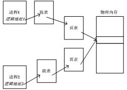
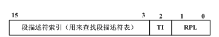
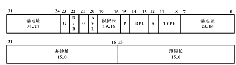
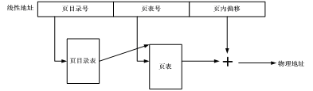

难度系数：★★★★☆
本次实验的基本内容是：
首先以汇编级调试的方式启动bochs，引导Linux 0.11，在0.11下编译和运行test.c。它是一个无限循环的程序， 永远不会主动退出。然后在调试器中通过查看各项系统参数，从逻辑地址、LDT表、GDT表、线性地址到页表， 计算出变量i的物理地址。最后通过直接修改物理内存的方式让test.c退出运行。test.c的代码如下：
#include <stdio.h>
int i = 0x12345678;
int main(void)
{
printf("The logical/virtual address of i is 0x%08x", &i);
fflush(stdout);
while (i)
;
return 0;
}
本项实验在Ubuntu下完成，与信号量实验中的pc.c的功能要求基本一致，仅有两点不同：
Linux下，可以通过shmget()和shmat()两个系统调用使用共享内存。
进程之间可以通过页共享进行通信，被共享的页叫做共享内存，结构如下图所示：

本部分实验内容是在Linux 0.11上实现上述页面共享，并将上一部分实现的producer.c和consumer.c移植过来，验证页面共享的有效性。
具体要求在mm/shm.c中实现shmget()和shmat()两个系统调用。 它们能支持producer.c和consumer.c的运行即可，不需要完整地实现POSIX所规定的功能。
shmget()
int shmget(key_t key, size_t size, int shmflg);
shmget()会新建/打开一页内存，并返回该页共享内存的shmid（该块共享内存在操作系统内部的id）。所有使用同一块共享内存的进程都要使用相同的key参数。如果key所对应的共享内存已经建立，则直接返回shmid。如果size超过一页内存的大小，返回-1，并置errno为EINVAL。如果系统无空闲内存，返回-1，并置errno为ENOMEM。shmflg参数可忽略。
shmat()
void *shmat(int shmid, const void *shmaddr, int shmflg);
shmat()会将shmid指定的共享页面映射到当前进程的虚拟地址空间中，并将其首地址返回。如果shmid非法，返回-1，并置errno为EINVAL。shmaddr和shmflg参数可忽略。
完成实验后，在实验报告中回答如下问题：
《注释》中的5.3节和第13章对Linux 0.11的内存管理有详细分析、讲解，很值得一看。
Linux 0.11完全遵循IA-32（Intel Architecture 32-bit）架构进行地址翻译，Windows、后续版本的Linux以及一切在IA-32保护模式下运行的操作系统都遵循此架构。因为只有这样才能充分发挥CPU的MMU的功能。关于此地址翻译过程的细节，请参考《注释》一书中的5.3.1-5.3.4节。
此过程比较机械，基本不消耗脑细胞，做一下有很多好处。
编译好Linux 0.11后，首先通过运行./dbg-asm启动调试器，此时Bochs的窗口处于黑屏状态，而命令行窗口显示：
========================================================================
Bochs x86 Emulator 2.3.7
Build from CVS snapshot, on June 3, 2008
========================================================================
00000000000i[ ] reading configuration from ./bochs/bochsrc.bxrc
00000000000i[ ] installing x module as the Bochs GUI
00000000000i[ ] using log file ./bochsout.txt
Next at t=0
(0) [0xfffffff0] f000:fff0 (unk. ctxt): jmp far f000:e05b ; ea5be000f0
<bochs:1>_
“Next at t=0”表示下面的指令是Bochs启动后要执行的第一条软件指令。单步跟踪进去就能看到bios的代码。不过这不是本实验需要的。直接输入命令“c”，continue程序的运行，Bochs一如既往地启动了Linux 0.11。
在Linux 0.11下输入（或拷入）test.c，编译为test，运行之，打印如下信息：
The logical/virtual address of i is 0x00003004
只要test不变，0x00003004这个值在任何人的机器上都是一样的。即使在同一个机器上多次运行test，也是一样的。
test是一个死循环，只会不停占用CPU，不会退出。
当test运行的时候，在命令行窗口按“ctrl+c”，Bochs会暂停运行，进入调试状态。绝大多数情况下都会停在test内，显示类似如下信息：
(0) [0x00fc8031] 000f:00000031 (unk. ctxt): cmp dword ptr ds:0x3004, 0x00000000 ; 833d0430000000
其中加粗的“000f”如果是“0008”，则说明中断在了内核里。那么就要c，然后再ctrl+c，直到变为“000f”为止。如果显示的下一条指令不是“cmp ...”，就用“n”命令单步运行几步，直到停在“cmp ...”。
使用命令“u /7”，显示从当前位置开始7条指令的反汇编代码，如下：
10000031: ( ): cmp dword ptr ds:0x3004, 0x00000000 ; 833d0430000000
10000038: ( ): jz .+0x00000002 ; 7402
1000003a: ( ): jmp .+0xfffffff5 ; ebf5
1000003c: ( ): xor eax, eax ; 31c0
1000003e: ( ): jmp .+0x00000000 ; eb00
10000040: ( ): leave ; c9
10000041: ( ): ret ; c3
这就是test.c中从while开始一直到return的汇编代码。变量i保存在ds:0x3004这个地址，并不停地和0进行比较，直到它为0，才会跳出循环。
现在，开始寻找ds:0x3004对应的物理地址。
ds:0x3004是虚拟地址，ds表明这个地址属于ds段。首先要找到段表，然后通过ds的值在段表中找到ds段的具体信息，才能继续进行地址翻译。每个在IA-32上运行的应用程序都有一个段表，叫LDT，段的信息叫段描述符。
LDT在哪里呢？ldtr寄存器是线索的起点，通过它可以在GDT（全局描述符表）中找到LDT的物理地址。
用“sreg”命令：
cs:s=0x000f, dl=0x00000002, dh=0x10c0fa00, valid=1
ds:s=0x0017, dl=0x00003fff, dh=0x10c0f300, valid=3
ss:s=0x0017, dl=0x00003fff, dh=0x10c0f300, valid=1
es:s=0x0017, dl=0x00003fff, dh=0x10c0f300, valid=1
fs:s=0x0017, dl=0x00003fff, dh=0x10c0f300, valid=1
gs:s=0x0017, dl=0x00003fff, dh=0x10c0f300, valid=1
ldtr:s=0x0068, dl=0xc2d00068, dh=0x000082f9, valid=1
tr:s=0x0060, dl=0x52e80068, dh=0x00008bfd, valid=1
gdtr:base=0x00005cc8, limit=0x7ff
idtr:base=0x000054c8, limit=0x7ff
可以看到ldtr的值是0x0068=0000000001101000（二进制），表示LDT表存放在GDT表的1101(二进制)=13（十进制）号位置（每位数据的意义参考后文叙述的段选择子）。而GDT的位置已经由gdtr明确给出，在物理地址的0x00005cc8。用“xp /32w 0x00005cc8”查看从该地址开始，32个字的内容，及GDT表的前16项，如下：
0x00005cc8 : 0x00000000 0x00000000 0x00000fff 0x00c09a00
0x00005cd8 : 0x00000fff 0x00c09300 0x00000000 0x00000000
0x00005ce8 : 0xa4280068 0x00008901 0xa4100068 0x00008201
0x00005cf8 : 0xf2e80068 0x000089ff 0xf2d00068 0x000082ff
0x00005d08 : 0xd2e80068 0x000089ff 0xd2d00068 0x000082ff
0x00005d18 : 0x12e80068 0x000089fc 0x12d00068 0x000082fc
0x00005d28 : 0xc2e80068 0x00008bf9 0xc2d00068 0x000082f9
0x00005d38 : 0x00000000 0x00000000 0x00000000 0x00000000
GDT表中的每一项占64位（8个字节），所以我们要查找的项的地址是“0x00005cc8 + 13 8”。“xp /2w 0x00005cc8 + 13 8”，得到：
0x00005d30 : 0xc2d00068 0x000082f9
上两步看到的数值可能和这里给出的示例不一致，这是很正常的。如果想确认是否准确，就看sreg输出中，ldtr所在行里，dl和dh的值，它们是Bochs的调试器自动计算出的，你寻找到的必须和它们一致。
“0xc2d00068 0x000082f9”将其中的加粗数字组合为“0x00f9c2d0”，这就是LDT表的物理地址（为什么这么组合，参考后文介绍的段描述符）。“xp /8w 0x00f9c2d0”，得到：
0x00f9c2d0 : 0x00000000 0x00000000 0x00000002 0x10c0fa00
0x00f9c2e0 : 0x00003fff 0x10c0f300 0x00000000 0x00f9d000
这就是LDT表的前4项内容了。
在保护模式下，段寄存器有另一个名字，叫段选择子，因为它保存的信息主要是该段在段表里索引值，用这个索引值可以从段表中“选择”出相应的段描述符。
先看看ds选择子的内容，还是用“sreg”命令：
cs:s=0x000f, dl=0x00000002, dh=0x10c0fa00, valid=1
ds:s=0x0017, dl=0x00003fff, dh=0x10c0f300, valid=3
ss:s=0x0017, dl=0x00003fff, dh=0x10c0f300, valid=1
es:s=0x0017, dl=0x00003fff, dh=0x10c0f300, valid=1
fs:s=0x0017, dl=0x00003fff, dh=0x10c0f300, valid=1
gs:s=0x0017, dl=0x00003fff, dh=0x10c0f300, valid=1
ldtr:s=0x0068, dl=0x52d00068, dh=0x000082fd, valid=1
tr:s=0x0060, dl=0x52e80068, dh=0x00008bfd, valid=1
gdtr:base=0x00005cc8, limit=0x7ff
idtr:base=0x000054c8, limit=0x7ff
可以看到，ds的值是0x0017。段选择子是一个16位寄存器，它各位的含义如下图：

其中RPL是请求特权级，当访问一个段时，处理器要检查RPL和CPL（放在cs的位0和位1中，用来表示当前代码的特权级），即使程序有足够的特权级（CPL）来访问一个段，但如果RPL（如放在ds中，表示请求数据段）的特权级不足，则仍然不能访问，即如果RPL的数值大于CPL（数值越大，权限越小），则用RPL的值覆盖CPL的值。而段选择子中的TI是表指示标记，如果TI=0，则表示段描述符（段的详细信息）在GDT（全局描述符表）中，即去GDT中去查；而TI=1，则去LDT（局部描述符表）中去查。
看看上面的ds，0x0017=0000000000010111（二进制），所以RPL=11，可见是在最低的特权级（因为在应用程序中执行），TI=1，表示查找LDT表，索引值为10（二进制）= 2（十进制），表示找LDT表中的第3个段描述符（从0开始编号）。
LDT和GDT的结构一样，每项占8个字节。所以第3项“0x00003fff 0x10c0f300”就是搜寻好久的ds的段描述符了。用“sreg”输出中ds所在行的dl和dh值可以验证找到的描述符是否正确。
接下来看看段描述符里面放置的是什么内容：

可以看到，段描述符是一个64位二进制的数，存放了段基址和段限长等重要的数据。其中位P（Present）是段是否存在的标记；位S用来表示是系统段描述符（S=0）还是代码或数据段描述符（S=1）；四位TYPE用来表示段的类型，如数据段、代码段、可读、可写等；DPL是段的权限，和CPL、RPL对应使用；位G是粒度，G=0表示段限长以位为单位，G=1表示段限长以4KB为单位；其他内容就不详细解释了。
费了很大的劲，实际上我们需要的只有段基址一项数据，即段描述符“0x00003fff 0x10c0f300”中加粗部分组合成的“0x10000000”。这就是ds段在线性地址空间中的起始地址。用同样的方法也可以算算其它段的基址，都是这个数。
段基址+段内偏移，就是线性地址了。所以ds:0x3004的线性地址就是：
0x10000000 + 0x3004 = 0x10003004
用“calc ds:0x3004”命令可以验证这个结果。
从线性地址计算物理地址，需要查找页表。线性地址变成物理地址的过程如下：

首先需要算出线性地址中的页目录号、页表号和页内偏移，它们分别对应了32位线性地址的10位+10位+12位，所以0x10003004的页目录号是64，页号3，页内偏移是4。
IA-32下，页目录表的位置由CR3寄存器指引。“creg”命令可以看到：
CR0=0x8000001b: PG cd nw ac wp ne ET TS em MP PE
CR2=page fault laddr=0x10002f68
CR3=0x00000000
PCD=page-level cache disable=0
PWT=page-level writes transparent=0
CR4=0x00000000: osxmmexcpt osfxsr pce pge mce pae pse de tsd pvi vme
说明页目录表的基址为0。看看其内容，“xp /68w 0”：
0x00000000 : 0x00001027 0x00002007 0x00003007 0x00004027
0x00000010 : 0x00000000 0x00024764 0x00000000 0x00000000
0x00000020 : 0x00000000 0x00000000 0x00000000 0x00000000
0x00000030 : 0x00000000 0x00000000 0x00000000 0x00000000
0x00000040 : 0x00ffe027 0x00000000 0x00000000 0x00000000
0x00000050 : 0x00000000 0x00000000 0x00000000 0x00000000
0x00000060 : 0x00000000 0x00000000 0x00000000 0x00000000
0x00000070 : 0x00000000 0x00000000 0x00000000 0x00000000
0x00000080 : 0x00ff3027 0x00000000 0x00000000 0x00000000
0x00000090 : 0x00000000 0x00000000 0x00000000 0x00000000
0x000000a0 : 0x00000000 0x00000000 0x00000000 0x00000000
0x000000b0 : 0x00000000 0x00000000 0x00000000 0x00ffb027
0x000000c0 : 0x00ff6027 0x00000000 0x00000000 0x00000000
0x000000d0 : 0x00000000 0x00000000 0x00000000 0x00000000
0x000000e0 : 0x00000000 0x00000000 0x00000000 0x00000000
0x000000f0 : 0x00000000 0x00000000 0x00000000 0x00ffa027
0x00000100 : 0x00faa027 0x00000000 0x00000000 0x00000000
页目录表和页表中的内容很简单，是1024个32位（正好是4K）数。这32位中前20位是物理页框号，后面是一些属性信息（其中最重要的是最后一位P）。其中第65个页目录项就是我们要找的内容，用“xp /w 0+64*4”查看：
0x00000100 : 0x00faa027
其中的027是属性，显然P=1，其他属性实验者自己分析吧。页表所在物理页框号为0x00faa，即页表在物理内存的0x00faa000位置。从该位置开始查找3号页表项，得到（xp /w 0x00faa000+3*4）：
0x00faa00c : 0x00fa7067
其中067是属性，显然P=1，应该是这样。
最终结果马上就要出现了！
线性地址0x10003004对应的物理页框号为0x00fa7，和页内偏移0x004接到一起，得到0x00fa7004，这就是变量i的物理地址。可以通过两种方法验证。
第一种方法是用命令“page 0x10003004”，可以得到信息：“linear page 0x10003000 maps to physical page 0x00fa7000”。
第二种方法是用命令“xp /w 0x00fa7004”，可以看到：
0x00fa7004 : 0x12345678
这个数值确实是test.c中i的初值。
现在，通过直接修改内存来改变i的值为0，命令是： setpmem 0x00fa7004 4 0，表示从0x00fa7004地址开始的4个字节都设为0。然后再用“c”命令继续Bochs的运行，可以看到test退出了，说明i的修改成功了，此项实验结束。
Linux支持两种方式的共享内存。一种方式是shm_open()、mmap()和shm_unlink()的组合；另一种方式是shmget()、shmat()和shmdt()的组合。本实验建议使用后一种方式。
这些系统调用的详情，请查阅man及相关资料。
特别提醒：没有父子关系的进程之间进行共享内存，shmget()的第一个参数key不要用IPC_PRIVATE，否则无法共享。用什么数字可视心情而定。
实验者需要考虑如何实现页面共享。首先看一下Linux 0.11如何操作页面，如何管理进程地址空间。
在kernel/fork.c文件中有：
int copy_process(…)
{
struct task_struct *p;
p = (struct task_struct *) get_free_page();
if (!p) return -EAGAIN;
……
}
函数get_free_page()用来获得一个空闲物理页面，在mm/memory.c文件中：
unsigned long get_free_page(void)
{
register unsigned long __res asm("ax");
__asm__("std ; repne ; scasb\n\t"
"jne 1f\n\t"
"movb $1,1(%%edi)\n\t"
"sall $12,%%ecx\n\t" //页面数*4KB=相对页面起始地址
"addl %2,%%ecx\n\t" //在加上低端的内存地址，得到的是物理起始地址
"movl %%ecx,%%edx\n\t"
"movl $1024,%%ecx\n\t"
"leal 4092(%%edx),%%edi\n\t"
"rep ; stosl\n\t"
"movl %%edx,%%eax\n" //edx赋给eax，eax返回了物理起始地址
"1:" :"=a" (__res) :"0" (0),"i" (LOW_MEM),"c" (PAGING_PAGES),
"D" (mem_map+PAGING_PAGES-1):"di","cx","dx"); return __res;
}
static unsigned char mem_map [ PAGING_PAGES ] = {0,};
显然get_free_page函数就是在mem_map位图中寻找值为0的项（空闲页面），该函数返回的是该页面的起始物理地址。
有了空闲的物理页面，接下来需要完成线性地址和物理页面的映射，Linux 0.11中也有这样的代码，看看mm/memory.c中的do_no_page(unsigned long address)，该函数用来处理线性地址address对应的物理页面无效的情况（即缺页中断），do_no_page函数中调用一个重要的函数get_empty_page(address)，其中有：
unsigned long tmp=get_free_page();
put_page(tmp, address); //建立线性地址和物理地址的映射
显然这两条语句就用来获得空闲物理页面，然后填写线性地址address对应的页目录和页表。
有了空闲物理页面，也有了建立线性地址和物理页面的映射，但要完成本实验还需要能获得一段空闲的虚拟地址空闲。要从数据段中划出一段空间，首先需要了解进程数据段空间的分布，而这个分布显然是由exec系统调用决定的，所以要详细看一看exec的核心代码，do_execve（在文件fs/exec.c中）。在函数do_execve（）中，修改数据段（当然是修改LDT）的地方是change_ldt，函数change_ldt实现如下：
static unsigned long change_ldt(unsigned long text_size,unsigned long * page)
{
/*其中text_size是代码段长度，从可执行文件的头部取出，page为参数和环境页*/
unsigned long code_limit,data_limit,code_base,data_base;
int i;
code_limit = text_size+PAGE_SIZE -1; code_limit &= 0xFFFFF000;
//code_limit为代码段限长=text_size对应的页数（向上取整）
data_limit = 0x4000000; //数据段限长64MB
code_base = get_base(current->ldt[1]); data_base = code_base;
//数据段基址=代码段基址
set_base(current->ldt[1],code_base); set_limit(current->ldt[1],code_limit);
set_base(current->ldt[2],data_base); set_limit(current->ldt[2],data_limit);
__asm__("pushl $0x17\n\tpop %%fs":: );
data_base += data_limit; //从数据段的末尾开始
for (i=MAX_ARG_PAGES-1 ; i>=0 ; i--) { //向前处理
data_base -= PAGE_SIZE; //一次处理一页
if (page[i]) put_page(page[i],data_base); //建立线性地址到物理页的映射
}
return data_limit; //返回段界限
}
仔细分析过函数change_ldt，想必实验者已经知道该如何从数据段中找到一页空闲的线性地址。《注释》中的图13-6也能给你很大帮助。
Linux的shell有后台运行程序的功能。只要在命令的最后输入一个&，命令就会进入后台运行，前台马上回到提示符，进而能运行下一个命令，例如：
# ./producer &
# ./consumer
当运行“./consumer”的时候，producer正在后台运行。